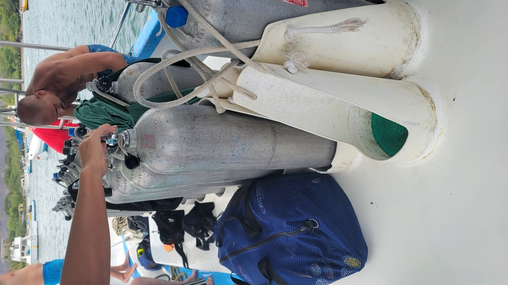
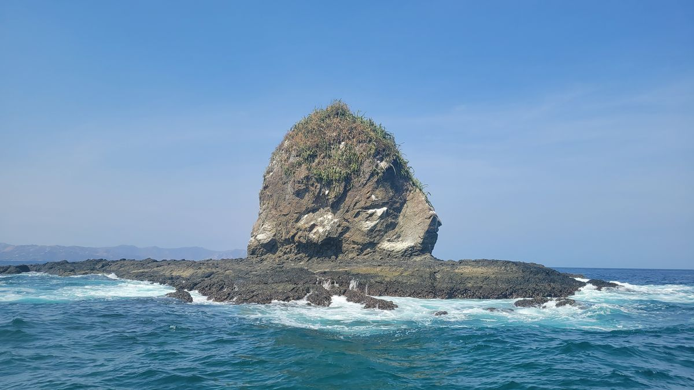

Playas Del Cocos
Continuing our tour of Co$ta Rica, my next stop is the Pacific Coast destination of Playa Del Cocos. It was here I decided I really needed to exercise the privileges of my new Open Water Diver certification. I’m new to the sport, so I really have no idea what exactly constitutes good diving, but a google search says Playa Del Cocos ranks high on the list for Costa Rica. I use the PADI travel agency to book a week of diving at a highly rated dive shop and didn’t think much of it until I was on the bus to Playa Del Cocos.
An email from a dive instructor asking when I wanted to come in and try on the rental gear I would use turned into a phone call because I had inadvertently book the wrong dates. I thought I was supposed to arrive on March 30th, instead I had made the reservation for April 30th. In my hasty planning I had about 4 different browser tabs open with different dates, and when I pulled the trigger I must have used the wrong one. Now I’m on a bus to somewhere where I have no reservations and its peak travel season. But, looking back, just how unfazed I was shows Ive probably been traveling too much. I tell the dive shop I will reschedule for a closer date and book a hotel for a few nights. I was able to move the dive trip up a few weeks, but now I have a week with no plans.
I get a jump start on my diving adventure around Playas del Cocos with another dive shop. I still don’t have a dive housing for my camera so you will just have to take my word for what I saw and did. Playas del Cocos has an abundance of fish and a few sharks and turtles that live in the area. Honestly, I’m still new to this whole thing, so really just being underwater and not dying is cool to me and seeing reef sharks and puffer fish just going about their lives is just cool. I also spent a few days in Tamarindo, another tourist hotspot about an hour south where I went with another Dive Shop to an place The Catalina Islands. A group of islands that sit about an hour away from Tamarindo and are a frequent hangout for Giant Manta Rays.

It was here that I knew that Scuba diving was going to become a major part of this journey. After riding a small skiff for an hour, our group of 3 divers and one guide dropped into the water. The water was a warm, slightly cooler than bathtub temperature. With a thumbs down signal, I emptied the air from the buoyancy control device and began a slow descent to the ocean floor, probably about 20 feet below us. As we adjusted our equipment to get a neutral buoyancy and gave an OK sign to the guide, we slowly began to swim in the coral reef surround the islands. This early in the morning the reef was a beehive of activity with thousands of fish and other creatures going about their morning routines. About 45 minutes into the dive the group came to a stop. I took a look around and what I saw was the underwater equivalent to a bust street corner in Manhattan during rush hour. I’m hovering about 10 feet above the ocean floor, probably 30 feet below the surface. To my left a giant school of Jack fish are floating by. To my right, about a dozen eagle rays and off to destinations unknown, below me 3 White Tip reef sharks are getting comfortable in the sand. It was then out of the Blue (not just a figure of speech here, litteraly, the blue water above) that a Giant Manta Ray appears. Easily 20 feet wide and followed by a group of smaller fish tagging along, it’s a sight I’ve never seen before. Giant Mantas are a curious species and when she saw the group of weird looking creatures (us) she decided to get a closer look and circled us a few times, allowing us to get a good, up close look at this magnificent creature. The giant Manta is always a welcome sight for divers. And a few minutes later the group resurfaced and the excitement of our guide was well known as she screamed “Mantaaa!!!” as soon as she removed the breathing regulator out of her mouth. Later admitting that the Giant Manta is her favorite sea creature.
This should have been my cue to buy a dive housing for my go pro, but decided I’d rather spend the money on more diving. Sorry Blog
Anyways, back to Los Cocos I go to being my week of Diving with the original dive shop. Here, I decided that I would also get the next certification that will allow me to dive deeper and open up more diving opportunities later on. Although, it’s called the Advance Open Water certification, I was assured it didn’t actually mean you were an advanced diver. Just that you were advancing your skills. I dove down to 30 meters or 100 feet and worked on my buoyancy and breath control. For a week straight I went diving every morning exploring the various dive locations around Los Cocos, like to this pace called Monkey Head Island.

I even made another trip out the The Catalinas and saw another Giant Manta! Don’t worry, I will be investing in a dive housing for the camera soon.
When I was starting to feel burnt out by just seeing different variations of the same stuff over and over again, Scuba Diving opened up an entirely new world to explore. More to come!